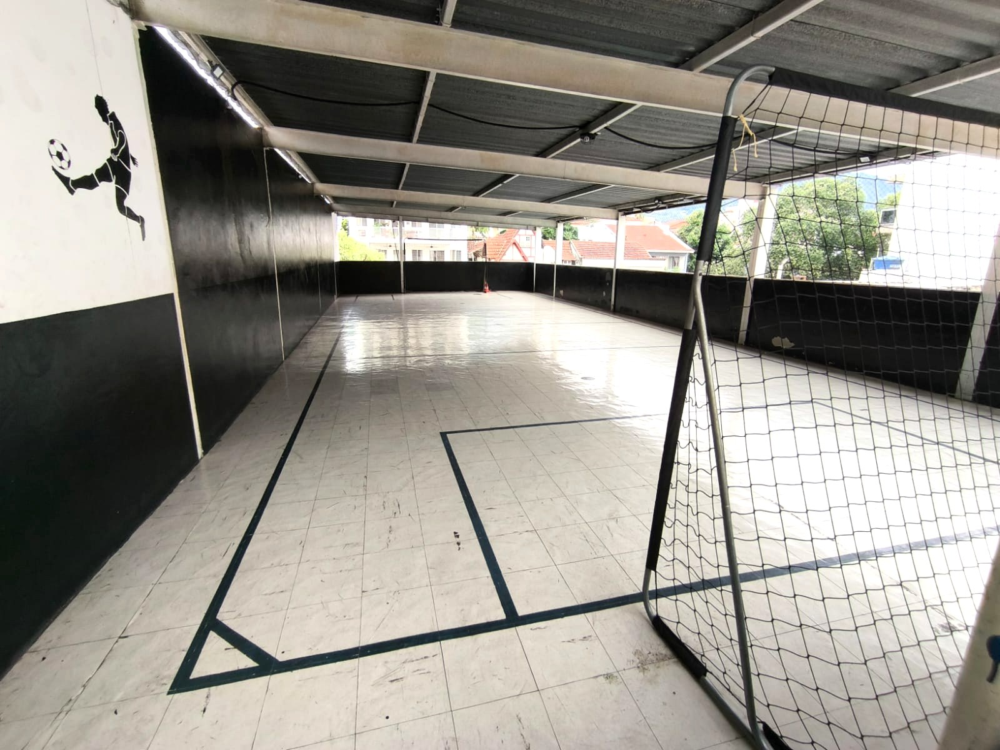
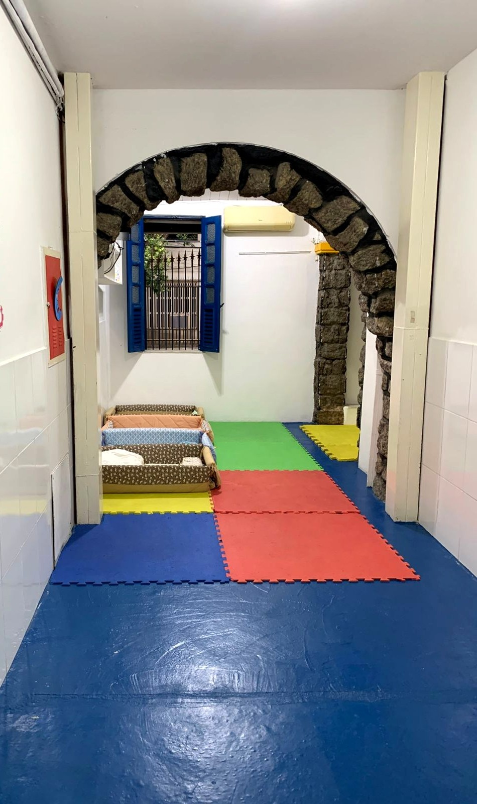
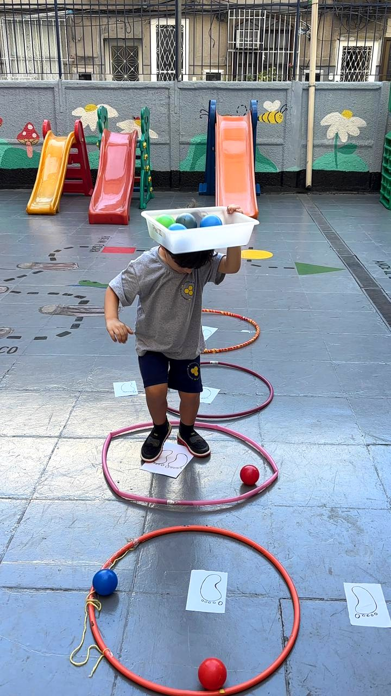
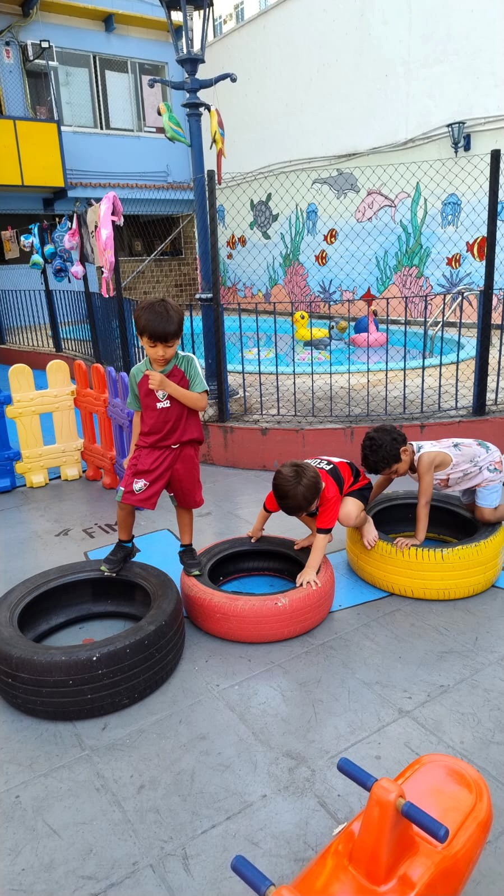
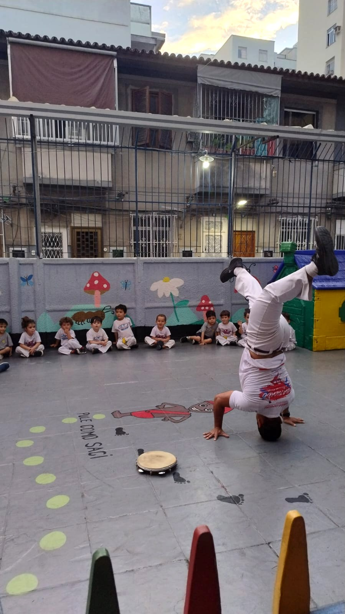
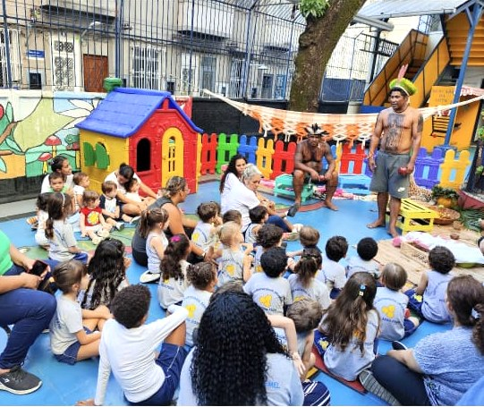

Acolhimento
Relações baseadas em respeito, escuta e segurança emocional.
Na Escola Gota de Mel, cada criança é acolhida em um ambiente seguro, alegre e estimulante, com uma proposta pedagógica que valoriza o desenvolvimento integral.
A Escola Gota de Mel é uma escola de Educação Infantil e Ensino Fundamental I localizada em Vila Isabel. Nossa proposta pedagógica une afeto, desenvolvimento e intencionalidade, respeitando o ritmo e a individualidade de cada aluno.
Desde 1993, colocamos em prática aquilo em que acreditamos, valorizando a interação entre família e escola, permitindo que nossos alunos descubram o conhecimento por meio do corpo em movimento, com cuidado, amor e acolhimento.
Relações baseadas em respeito, escuta e segurança emocional.
Estímulos adequados para cada fase do crescimento infantil.
Espaço para experimentar, brincar, criar e se expressar.
Comunicação aberta, rotina organizada e vínculo com os responsáveis.
Atendemos Berçário, Maternal 1, Maternal 2, Pré I, Pré II e 1º Ano, com opções de parcial manhã, parcial tarde, intermediário e integral.
Bebês a partir de 4 meses, com acolhida, alimentação, higiene, estimulação, descanso e recreação.
Saiba mais →Maternal e Pré com muito afeto, movimento, linguagem, criatividade e vivências significativas.
Saiba mais →Primeiros passos do Fundamental I com intencionalidade pedagógica, autonomia e construção do conhecimento.
Saiba mais →Nosso planejamento coloca a criança no centro do processo. A aprendizagem acontece por meio de experiências, projetos, brincadeiras, leitura, arte, investigação e convivência, sempre respeitando o ritmo e a individualidade de cada aluno.
Conheça um pouco da estrutura da Escola Gota de Mel: espaços preparados com carinho para garantir segurança, conforto e estímulo à aprendizagem.


As atividades dirigidas no integral ajudam a desenvolver coordenação motora, socialização, autonomia, atenção e muita diversão.




As famílias destacam a comunicação aberta, a organização da rotina, os projetos afetivos, o cuidado com cada detalhe, a sensação de segurança, a alimentação saudável, as atividades dinâmicas e a equipe afetuosa e disponível.
Estamos em Vila Isabel, no Rio de Janeiro. Será um prazer receber sua família e apresentar a Escola Gota de Mel.
Endereço
Rua Senador Muniz Freire, 18 — Vila Isabel — Rio de Janeiro/RJ
Telefone / WhatsApp
(21) 3259-7524
Horário integral
7h às 19h